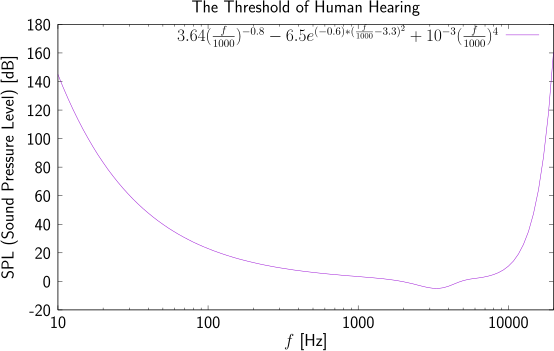

The threshold of hearing tells you how much noise you can hide in each subband.
Psychoacoustics (see the sound, the human auditory system, and the human sound perception) has determined that the HAS (Human Auditory System) has a sensitivity that depends on the frequency of the sound. Such behaviour is described by the so called ToH ( Threshold of (Human) Hearing). This basically means that some subbands (intervals of frequencies) can be quantized with a larger quantization step than others without a noticeable increase (from a perceptual perspective) of the quantization noise [2].

A good approximation of ToH for a 20-year-old person can be obtained with [1]
This equation has been plotted in Fig. 1.
The frequency resolution of the HAS is finite. This basically means that two tonal sounds almost sound the same when they have similar frequencies. Moreover, the minimal distance in frequency to confuse both depends on their frequencies: if the frequency is low, the distance must be smaller. Such behaviour can be described by the Bark scale (see also this), were as it can be seen, the size of the “critical” bands increases with the frequency.
Considering both concepts, the ToH and the BS, we can improve (subjectively) the quality of the sound for a given bit-rate. The idea is to use a different QSS for each critical band. The QSSs should resemble the ToH curve, and the bandwidth of the subbands should follow the tendence of the size of the critical bands.
The number of subbands generated by the DWT is
where \(L_\text {DWT}\) is the number of levels of the DWT [3]. Notice that, except for the \({\mathbf l}^{N_{\text {levels}}}\) subband (the lowest-pass frequency of the decomposition), it holds that
being \(W(\cdot )\) the bandwidth of the corresponding subband. Therefore, considering that (by default, in InterCom) the bandwidth of the audio signal is \(22050\) Hz, the bandwidth \(W({\mathbf w}_1)=22050/2\) Hz, \(W({\mathbf w}_2)=22050/4\), etc. It is also true that (see InterCom: a Real-Time Digital Audio Full-Duplex Transmitter/Receiver)
Unfortunately, as it can be seen, the DWT does not provide a good decomposition if we want to use a different QSS for each critical band (\(N_{\text {DWT}}\) is generally too small1 and the size of the subbandas does not resemble the BS critical bands).
The WPT is an extensión of the DWT where the 2-channels PRFB is applied also recursively to the high frequencies (see Milestone Transform Coding for Redundancy Removal). Now, the number of subbands genearted by the WPT is
where \(L_\text {DWT}\) is the number of levels of the DWT [3].
Unfortunately (again), although in this case, \(N_{\text {WPT}}\) can be much larger than \(N_{\text {DWT}}\),
i.e., all the WPT subbands have the same bandwidth which neither it is the most suitable to mimic the BS critical bands.
The MDCT generates a total of \(N\) subbands for \(2N\) samples, but because it is computed in an overlapping manner, in the end we have \(N\) subbands for each \(N\) input samples. Therefore, each MDCT coefficient represents a subband (for a chunk size of \(N\) samples) with a width of \(f_s/2/N\) Hz. Therefore, MDCT offers better spectral resolution than DWT and WPT.
The ToH curve [1] varies between individuals:
And this can be said without considering your local audio infraestructure.2
Uniform quantization introduces quantization noise, whose power (for a step size \(\Delta _k\)) for the \(k\)-th subband is (see Milestone Bit-rate control)
To be inaudible, quantization noise in each subband should be below the ToH for that subband. Obviously, if the compression ratio requirement cannot meet this, the noise should be equally distributed among all the subbands.
The variance of a signal (or a linear transformation of a signal) can be a good estimator of the signal power, \(P(\mathbf {s})=\sigma _{\mathbf {s}}^2\), i.e., for the subband \(k\), we have that
This expression (Eq. \eqref{eq:find_delta}) establishes a relationship between the ToH curve and the QSS in each subband: if \(P_k\) (the power of the signal to be audible in the \(k\)-th subband) increases, then the QSS for that subband can be higher, and viceversa.
The module ToH_WPT_coding.py implements the idea of perceptual quantization
after using WPT. Write a new module called ToH_MDCT_coding.py that performs the
same task, but on an audio sequence processed with MDCT. Use a notebook to
generate the module ToH_MDCT_coding.py, evaluate, and describe the implemented
algorithm.
[1] M. Bosi and R.E. Goldberd. Introduction to Digital Audio Coding and Standards. Kluwer Academic Publishers, 2003.
[2] K. Sayood. Introduction to Data Compression (Slides). Morgan Kaufmann, 2017.
[3] M. Vetterli and J. Kovačević. Wavelets and Subband Coding. Prentice-hall, 1995.